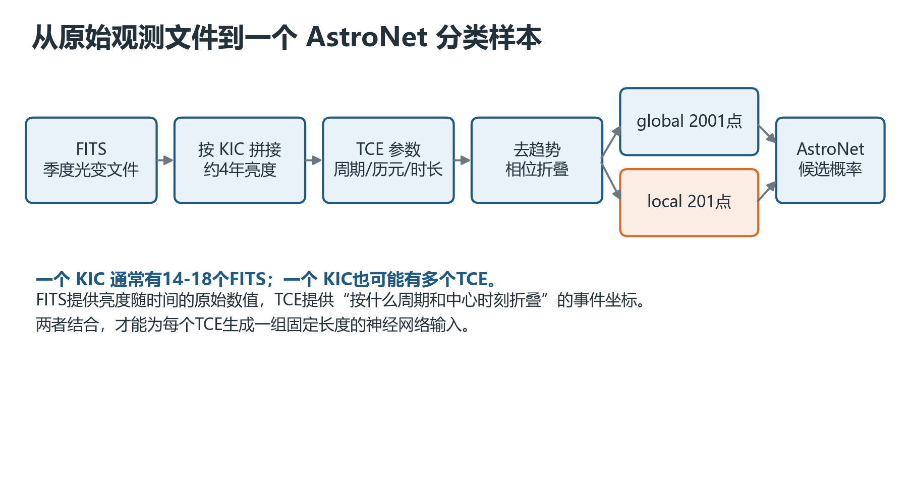
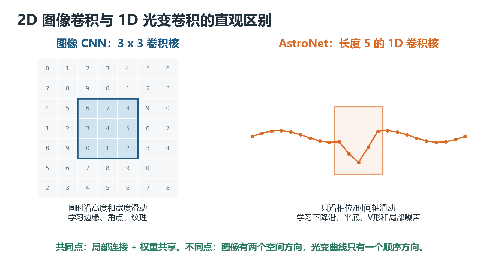
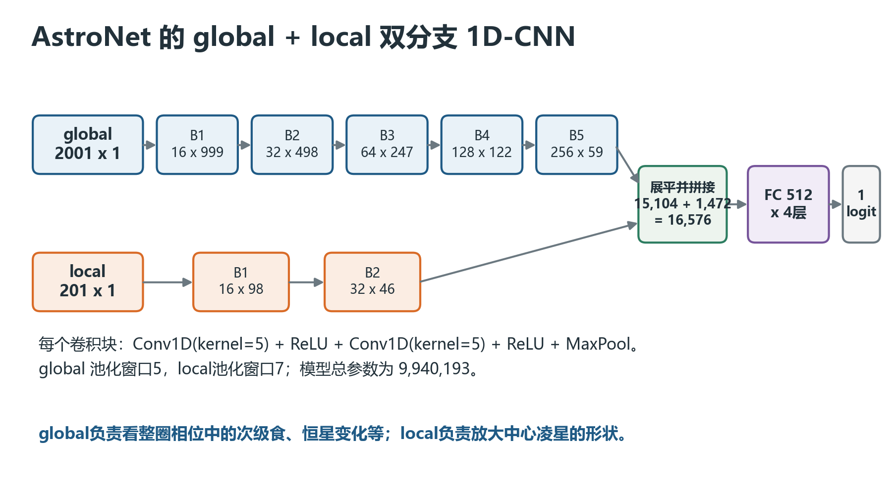
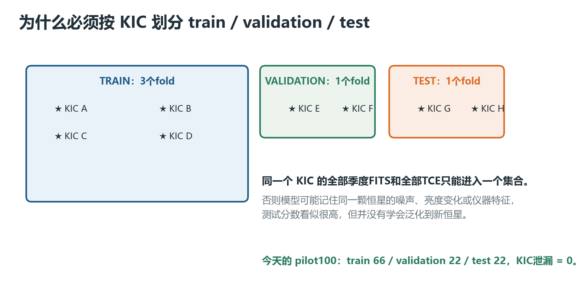
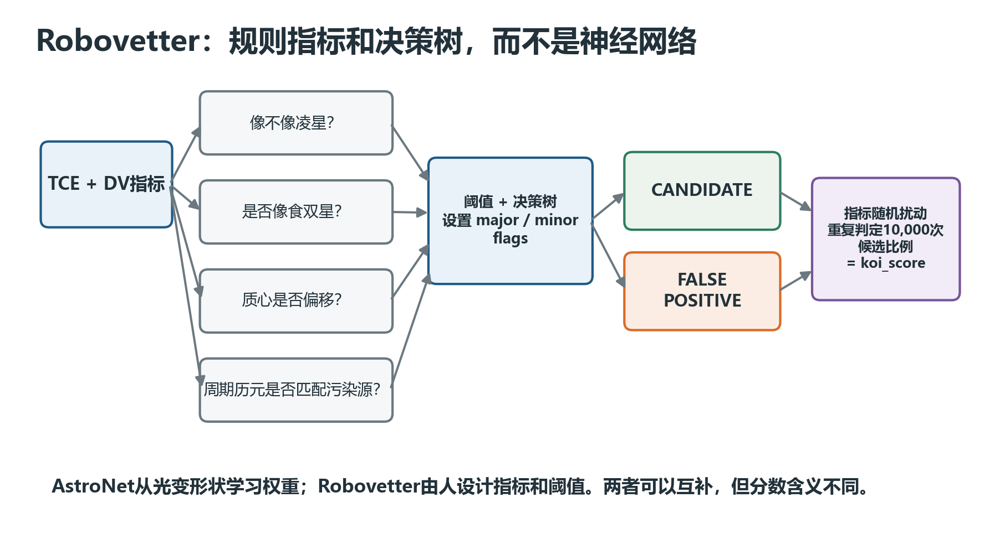
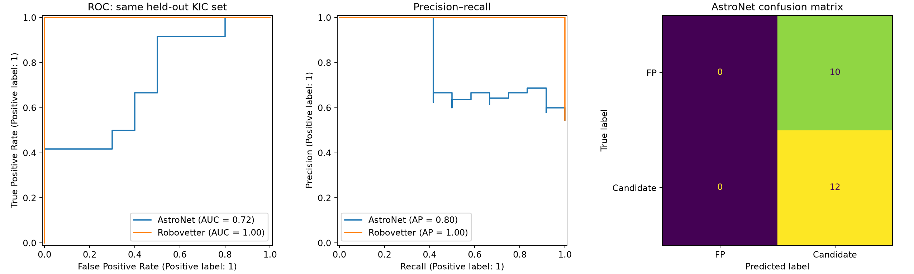
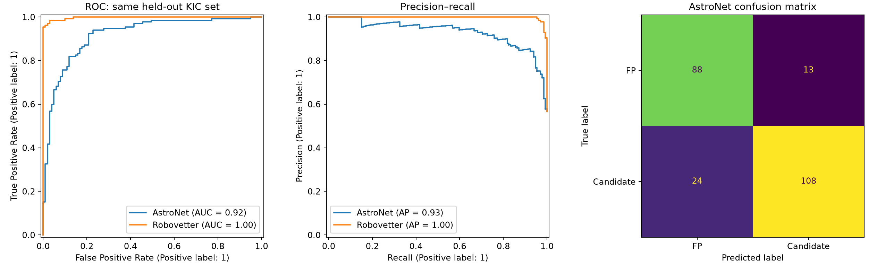
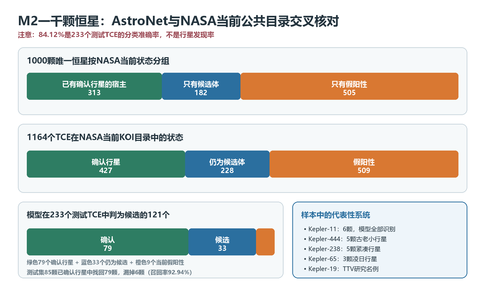
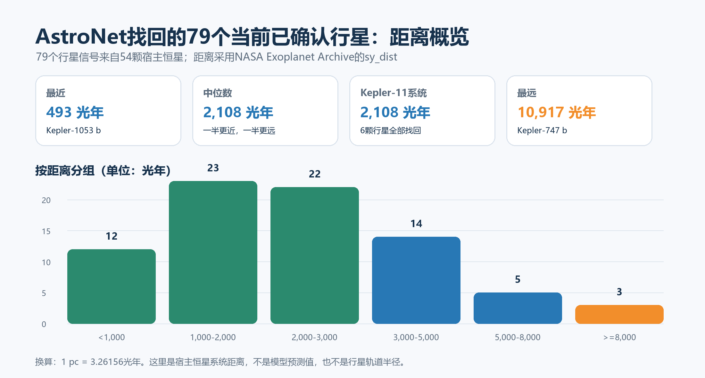

本文记录 2026-07-14 在 E5 双 RTX 3090 工作站上完成的 AstroNet-PyTorch 复现实验：先用100颗恒星跑通小闭环，再扩展到1000颗恒星、1164个TCE完成20轮训练。文章从零解释网络架构、1D卷积、Robovetter、FITS与TCE的关系，以及 train、validation、test 为什么必须按恒星划分。基线始终只使用第一张 RTX 3090，第二张显卡不参与，以减少实验变量。
1. 先给初学者一个完整答案#
今天跑通的模型确实采用传统机器学习中熟悉的三类数据集：
- train：训练集，用来计算损失、反向传播并修改网络权重。
- validation：验证集，用来选择模型、训练轮数、阈值和超参数，不直接修改权重。
- test：测试集，只在模型方案固定后做最终评价，不能反复拿来调模型。
但是天文时序数据还有一个比普通图片分类更容易踩坑的要求：必须按 KIC 恒星编号分组划分。同一颗恒星的全部季度FITS、全部TCE都只能进入其中一个集合，否则模型可能在训练集和测试集中同时见到同一颗星，形成数据泄漏。
实验分成两个阶段。第一阶段 pilot100 用于确认完整流程能够运行，共生成110个有标签TCE：
| 集合 | TCE样本数 | 用途 |
|---|---|---|
| train | 66 | 更新模型权重 |
| validation | 22 | 选择最佳轮次和检查泛化 |
| test | 22 | 最终小样本流程检查 |
KIC跨集合泄漏数为0。
第二阶段M2把唯一恒星扩大到1000颗，并固定500颗纯候选体宿主和500颗纯假阳性宿主。由于一颗恒星可能含多个TCE，最终得到1164个训练样本：
| 集合 | TCE样本数 | 候选体 | 假阳性 |
|---|---|---|---|
| train | 698 | 396 | 302 |
| validation | 233 | 132 | 101 |
| test | 233 | 132 | 101 |
两个阶段都严格按KIC分组，M2的 kic_leakage_max_splits=1，表示每颗恒星只出现在一个集合中。

2. FITS不是图片，TCE也不是文件#
2.1 FITS是什么#
FITS是天文学常用的数据容器格式。Kepler long-cadence FITS的核心不是一张给人看的照片，而是一张数值表，其中包括：
TIME：每次观测的时间。PDCSAP_FLUX：经过Kepler管线校正的恒星亮度。SAP_QUALITY：该次观测可能存在何种质量问题的标记。- 头部元数据：季度、目标编号、观测信息等。
Kepler主任务持续约4年，按Q0到Q17分成17个约90天的季度。不是所有恒星都有完整18段，因此一颗恒星通常对应约14到18个long-cadence FITS。
所以“10颗恒星发现170个FITS”的含义大致是：
10颗恒星 x 平均17个季度文件 = 约170个FITS
这不是170张分类图片，也不是170颗恒星。程序要把属于同一KIC的季度文件按时间拼接，才得到这颗恒星约4年的完整光变历史。
2.2 KIC是什么#
KIC是Kepler Input Catalog编号，可以把它理解成Kepler观测目标的“恒星身份证号”。例如 KIC 003120355 表示一颗特定恒星。
同一个KIC可能存在多个周期不同的凌星信号。例如一颗多行星系统中，不同行星产生不同周期的亮度下降，因此同一颗恒星可以产生多个TCE。
2.3 TCE是什么#
TCE是 Threshold Crossing Event，即“超过检测阈值的事件”。Kepler搜索管线先在光变曲线中寻找重复的亮度下降。当一个周期性信号达到检测条件时，就生成一条TCE记录。
TCE不是一份新的光变文件，而是一组描述“如何在原始光变中定位这个事件”的参数，主要包括：
| 字段 | 含义 | 在预处理中的作用 |
|---|---|---|
kepid |
恒星KIC编号 | 找到该恒星的全部FITS |
tce_plnt_num |
该恒星上的事件序号 | 区分同一恒星的多个TCE |
tce_period |
周期，单位天 | 决定按多长周期折叠光变 |
tce_time0bk |
凌星中心历元 | 决定把哪个时刻对齐到相位0 |
tce_duration |
事件持续时间，单位小时 | 决定local视图放大多宽 |
| MES等 | 多事件统计显著性 | 描述信号强弱，不直接替代光变输入 |
FITS提供“亮度随时间怎么变化”，TCE提供“用什么周期、中心时刻和持续时间去观察这段变化”。两者缺一不可。
2.4 TCE、KOI和确认行星不是同一个概念#
可以把它们看成逐级筛选：
原始恒星光变
-> 管线检测到周期信号：TCE
-> 通过进一步审查、值得跟踪：KOI
-> 被判为行星候选体：Planet Candidate
-> 经过额外证据确认：Confirmed Planet
TCE只是“机器检测到一个值得检查的周期事件”，并不自动等于行星。星斑、食双星、背景污染、宇宙线、滚动带噪声和数据处理伪影都可能生成TCE。
3. 为什么要先去趋势和相位折叠#
原始光变中，行星凌星只是很短、很浅的下降。与此同时，恒星自身会缓慢变亮变暗，仪器也会引入长期趋势。
今天的复现按照Google AstroNet的思路处理：
- 读取同一KIC的全部季度FITS。
- 删除时间或亮度为非有限值的采样点。
- 在大于0.75天的观测间隙处分段。
- 对每段尝试多种B样条断点间距，用BIC选择低频趋势。
- 用原亮度除以样条趋势，得到近似平坦的归一化光变。
- 使用TCE的周期和历元进行相位折叠。
- 生成global 2001点和local 201点两个固定长度向量。
所谓相位折叠，就是把许多个轨道周期叠在一起。假设周期为10天，Kepler观测了1000天，那么约100次可能的凌星会对齐到相位0附近。单次很弱的下降经过对齐后会更清楚。
相位时间可写成：
folded_time = ((time - epoch + period/2) mod period) - period/2
折叠结果位于 [-period/2, period/2)，预测凌星中心位于0。
4. AstroNet的输入到底是什么#
AstroNet不直接把107,364个FITS文件逐个塞进网络。FITS经过拼接、去趋势、折叠和分箱后，每个TCE才变成一组固定长度输入。
4.1 global view：2001点#
global视图覆盖完整轨道周期，从 -period/2 到 +period/2。它让模型看到：
- 中心主凌星以外是否还有次级食。
- 轨道其他相位是否存在异常下降。
- 整圈形状是否存在双星或恒星活动特征。
- 主事件相对完整周期的宽度和对称性。
官方配置使用2001个位置，分箱宽度为 period / 2001。
4.2 local view：201点#
local视图只观察中心凌星附近，范围约为中心左右各4个TCE持续时间。它放大：
- 凌星底部是平底还是V形。
- 入凌和出凌是否对称。
- 事件宽度是否合理。
- 中心附近是否有尖峰、孤立坏点或不稳定噪声。
local视图有201个位置，官方分箱宽度为 0.16 x duration。
4.3 为什么要同时使用两个视图#
只看global，单个凌星在2001点里可能过窄；只看local，又看不到轨道另一侧的次级食。因此双视图类似于医生同时看“全身片”和“局部放大片”。
两个视图都被归一化为中位数约0、最深点约-1。这样模型更关注形状，而不是仅仅记住绝对亮度尺度。
5. 图像CNN与1D-CNN有什么区别#
5.1 图像中的2D卷积#
普通灰度图像可以表示为：
[通道, 高度, 宽度]
常见的 3 x 3 卷积核同时沿上下和左右两个方向滑动。它一次查看相邻9个像素，可以逐层学出边缘、角点、纹理和物体形状。
5.2 光变曲线中的1D卷积#
AstroNet输入是一条按相位排列的数值序列：
[通道, 序列长度]
这里没有“上下”和“左右”两个空间方向，只有时间或相位这一个顺序方向。长度5的1D卷积核每次查看连续5个位置，然后沿序列向前滑动。

对一个输出通道，可以把计算简化理解为：
output[i] = bias
+ w[0] * input[i-2]
+ w[1] * input[i-1]
+ w[2] * input[i]
+ w[3] * input[i+1]
+ w[4] * input[i+2]
真实网络同时有多个输入通道和输出通道，因此还要对通道求和。训练会自动调整这些权重，让某些卷积核对下降沿敏感、某些对V形敏感、某些对尖锐孤立噪声敏感。
5.3 二者的共同点#
- 都使用局部连接：每个神经元只看附近一小段。
- 都使用权重共享：同一卷积核在不同位置复用。
- 都可以通过堆叠卷积层扩大感受野。
- 都常用ReLU引入非线性、用池化压缩长度并提高小位移鲁棒性。
5.4 为什么1D-CNN适合相位折叠光变#
凌星、食双星和仪器伪影都表现为局部形状。1D-CNN不需要人工写出“V形程度”“下降沿斜率”等全部规则，而是可以从标注样本中学习有用的局部模式。
6. AstroNet双分支网络逐层拆解#

6.1 教科书式逐层展开图应该怎样读#
下面这张图把实际运行的PyTorch网络从左到右完全展开。图中的尺寸统一写成“通道数 x 序列长度”，不包含batch维。例如，global输入 1 x 2001 表示一条样本有1个输入通道、2001个相位格点；训练时若batch size为64，送入网络的完整张量形状就是 [64, 1, 2001]。

读这张图时，可以抓住四条线索：
- 从左向右是数据流。 蓝色global分支看完整相位周期，橙色local分支放大中心凌星；两者并行提取特征，之后才展平、拼接。
- 序列长度逐渐缩短。 global从2001点缩到59个位置，local从201点缩到46个位置，主要是MaxPool造成的。
- 通道数逐渐增加。 通道可以理解为网络学习出来的“特征探测器种类”。早期通道可能响应下降沿、上升沿或尖峰，后期通道会组合出V形、U形、次级食等更复杂模式。
- 最右边才做最终分类。 两个分支合计得到16,576个数，经过4层512维全连接层，输出一个logit，再由sigmoid转换成0到1的AstroNet分数。
6.2 1D卷积核究竟是什么#
传统图像CNN常见的 3 x 3 卷积核会同时沿图像的高度和宽度滑动。AstroNet处理的不是二维照片，而是一条按相位排列的光变序列，所以卷积核只沿一个方向滑动。本项目的 kernel_size=5 表示每次查看连续5个相位格点，而不是 5 x 5 的方块。
对第一层的某一个卷积通道，可以把一个位置的计算简写为：
y(t) = b + w(-2)x(t-2) + w(-1)x(t-1) + w(0)x(t)
+ w(1)x(t+1) + w(2)x(t+2)
这里的5个权重和一个偏置不是人工设定的，而是从训练数据中学习的。同一组权重会在2001点或201点的所有位置重复使用，这叫权重共享。因此，一个学会识别“凌星下降沿”的卷积核，无论下降沿落在序列的哪个位置，都可以产生响应。
严格地说，第一层以后每个位置不再只有一个亮度值，而是有许多通道。某个输出通道会同时读取所有输入通道在相邻5个位置的数值，再进行加权求和。网络越深，它看到的就越不是单个亮度点，而是前面各层已经提取出的形状组合。
卷积块中各操作的作用是：
- 第一层Conv1D： 从相邻点学习局部变化，例如下降沿、上升沿、尖峰和平坦区域。
- ReLU： 把负响应截为0，保留被当前特征探测器激活的部分，并为网络引入非线性。
- 第二层Conv1D： 把第一层的简单响应继续组合，例如形成V形、U形、非对称凹陷或短时伪影。
- MaxPool1D： 压缩序列长度，让后续神经元覆盖更大的原始范围，并降低对一两个相位格偏移的敏感程度。
这也解释了网络中“长度变短、通道变多”的总体趋势：位置分辨率逐步变粗，但可表示的特征类型逐步丰富。
6.3 一个卷积块是什么#
本项目严格按Google官方配置实现，每个卷积块包含：
Conv1D(kernel_size=5)
-> ReLU
-> Conv1D(kernel_size=5)
-> ReLU
-> MaxPool1D
卷积使用same padding，所以卷积本身保持序列长度；池化使用valid方式，负责缩短序列。
6.4 global分支#
| 阶段 | 通道数 x 长度 | 说明 |
|---|---|---|
| 输入 | 1 x 2001 | 完整轨道周期 |
| Block 1 | 16 x 999 | 两层卷积，窗口5，池化5/步长2 |
| Block 2 | 32 x 498 | 通道翻倍 |
| Block 3 | 64 x 247 | 感受野继续扩大 |
| Block 4 | 128 x 122 | 提取更高层组合模式 |
| Block 5 | 256 x 59 | 最终global特征图 |
| 展平 | 15,104 | 256 x 59 |
6.5 local分支#
| 阶段 | 通道数 x 长度 | 说明 |
|---|---|---|
| 输入 | 1 x 201 | 中心凌星放大图 |
| Block 1 | 16 x 98 | 两层卷积，池化7/步长2 |
| Block 2 | 32 x 46 | 第二组局部特征 |
| 展平 | 1,472 | 32 x 46 |
6.6 拼接与全连接分类器#
global展平：15,104
local展平： 1,472
拼接总计： 16,576
16,576 -> 512 -> 512 -> 512 -> 512 -> 1 logit
最后一个logit经过sigmoid后转成0到1的AstroNet分数。训练时使用 BCEWithLogitsLoss，它把sigmoid和二元交叉熵合并，数值更稳定。
模型可训练参数总数是 9,940,193。float32纯权重约40 MB；使用Adam训练时还要保存梯度与一阶、二阶动量，因此训练检查点和显存占用会更大，但对单张24 GB RTX 3090仍然非常小。
6.7 为什么没有直接照搬NASA FDL PyTorch代码#
网上已有NASA Frontier Development Lab的PyTorch翻译版，可作为重要参考。但逐层核对发现，其公开 astronet.py：
- 只实现了3层512维隐藏全连接层，而Google官方配置要求4层。
- 有一处卷积后缺少ReLU。
所以本项目不是盲目复制第三方代码，而是以Google TensorFlow配置为最高标准，参考FDL实现并完成现代PyTorch校正。
7. MaxPool在一维网络里做什么#
MaxPool1D(kernel=5, stride=2) 会在连续5个位置中保留最大激活，然后向前移动2格。这里保留的不是原始亮度最大值，而是卷积特征的最大响应。
它有三个作用：
- 缩短序列，降低后续计算量。
- 扩大后层神经元能看到的原始范围。
- 让特征对很小的相位偏移不那么敏感。
池化也会损失精细位置，所以local分支只有2个卷积块，避免把201点的凌星细节压缩得过度；global分支有5个块，用来整合完整周期上的大范围信息。
8. train、validation、test如何划分#

8.1 train训练集#
每一批样本经过网络得到logit，与标签计算二元交叉熵。PyTorch反向传播梯度，Adam优化器更新9,940,193个参数。
今天保留了原论文的数据增强：训练时随机把一部分global和local序列左右翻转。一个对称或近似对称的凌星在相位方向翻转后仍应保持类别，这可以降低模型对偶然方向细节的依赖。
8.2 validation验证集#
验证集不更新权重。每轮训练后在验证集计算损失、PR-AUC等指标，用它选择“最佳轮次”的模型检查点。
不能根据test集反复选轮次，否则test集也参与了模型设计，最终数字会偏乐观。
8.3 test测试集#
测试集应模拟模型第一次看到的新恒星。模型结构、超参数和最佳轮次都确定后，再在test集计算准确率、召回率、精确率、F1、ROC-AUC和PR-AUC。
8.4 为什么不是随机按TCE逐行切分#
同一KIC的多个TCE共享相同FITS、相同恒星活动和大量相同仪器噪声。如果把一个TCE放入train、另一个放入test，模型可能识别的是这颗恒星，而不是行星凌星。
因此本项目采用5折分组：fold 0作为test，fold 1作为validation，fold 2到4作为train，并使用标签分层尽量保持正负比例。
9. 标签从哪里来#
今天的监督标签使用DR25 KOI表中的 koi_pdisposition：
CANDIDATE -> 1
FALSE POSITIVE -> 0
DR25共有34,032条TCE，但只有8,054条对应KOI正负标签：
| 标签 | 数量 |
|---|---|
| CANDIDATE | 4,034 |
| FALSE POSITIVE | 4,020 |
| 合计 | 8,054 |
这些有标签TCE涉及6,923颗唯一恒星。未标注的25,978条TCE不会在当前有监督基线中直接作为普通训练标签；它们以后可用于无监督、半监督或真正的全量搜索研究。
10. Robovetter是什么算法#
Robovetter不是卷积神经网络，也不是端到端深度学习。它是Kepler团队把人工审查经验编码成的一组指标、阈值和简单决策树。

主要检查可归纳为四类：
- Not Transit-Like：事件是否根本不像天体凌星，例如孤立坏点、系统噪声或不稳定的单次下降。
- Stellar Eclipse：是否存在次级食、椭球变化、过深或明显V形的食，提示食双星。
- Centroid Offset：差分图像质心是否偏向邻近恒星，提示信号并非来自目标星。
- Ephemeris Match：周期和历元是否与其他目标或已知污染源匹配，提示串扰或背景污染。
Robovetter把测试结果记录为major和minor flags，然后统一判为CANDIDATE或FALSE POSITIVE。
10.1 koi_score是什么意思#
koi_score不是简单的“Robovetter认为是行星的物理概率”。DR25会根据指标在周期和MES上的散布随机扰动各项Robovetter指标，并重新判定10,000次。最终被判为CANDIDATE的次数比例就是score。
例如score为0.92，可以理解为指标扰动后10,000次判定中约92%仍通过候选规则。它更接近“判定对指标扰动的稳定度”。
10.2 AstroNet与Robovetter的根本区别#
| 对比项 | AstroNet | Robovetter |
|---|---|---|
| 核心方法 | 可训练的1D-CNN | 人工设计指标、阈值和决策树 |
| 主要输入 | global/local光变形状 | DV指标、光变指标、质心、周期匹配等 |
| 特征来源 | 从数据学习 | 天文学家显式设计 |
| 输出 | 神经网络logit和sigmoid分数 | PC/FP、flags、扰动稳定度score |
| 优点 | 能学习难以手写的形状组合 | 可解释，能利用质心和污染证据 |
| 风险 | 可能学到数据偏差，解释较难 | 阈值附近不连续，规则维护复杂 |
Robovetter能使用质心和星场污染等信息，而当前经典AstroNet只看两个光变视图。因此AstroNet不应被描述成对Robovetter所有能力的完整替代。
11. 今天具体做了什么#
11.1 官方与参考代码核对#
- 浅克隆Google Research官方
exoplanet-ml，固定提交用于结构和预处理核对。 - 浅克隆NASA FDL AstroNet-PyTorch，用于交叉参考。
- 按Google配置重建双分支网络。
- 检查每层输出尺寸和总参数数。
一致性检查结果：
| 检查项 | 结果 |
|---|---|
| local隐藏输出 | [2, 32, 46] |
| global隐藏输出 | [2, 256, 59] |
| 最终输出 | [2] |
| 参数数 | 9,940,193 |
| local归一化 | median=0，minimum=-1 |
| global归一化 | median=0，minimum=-1 |
| PyTorch | 2.12.1+cu126 |
| GPU | RTX 3090，训练进程只可见1张 |
11.2 pilot100真实FITS闭环#
- 100颗恒星全部完成预处理。
- 生成110个有KOI标签的TCE视图。
- train/validation/test为66/22/22。
- KIC泄漏为0。
- 其中1颗恒星触发2018年Google spline与新版pydl的数组兼容异常。
- 兼容回退仍使用官方样条函数，只把BIC多断点搜索改为固定1.5天断点，并在元数据中明确记录，避免静默改变算法。
11.3 单GPU五轮冒烟训练#
本次只用于验证数据、网络、反向传播、检查点和评价代码能够闭环。66个训练样本远不足以训练近千万参数模型。
| 方法 | 准确率 | 精确率 | 召回率 | F1 | ROC-AUC | PR-AUC |
|---|---|---|---|---|---|---|
| AstroNet-PyTorch | 54.55% | 54.55% | 100.00% | 70.59% | 0.7167 | 0.7972 |
| DR25 Robovetter | 90.91% | 100.00% | 83.33% | 90.91% | 1.0000 | 1.0000 |

AstroNet在0.5阈值下把22个测试样本全部判为正类，所以召回率达到100%，但10个负类全部成为假阳性。这是典型的小样本阈值塌缩，不能解读为“模型找回了所有行星”。
11.4 从100颗恒星扩展到1000颗#
pilot100暴露的核心问题不是网络无法运行，而是近千万参数面对66个训练样本时几乎没有机会学到稳定的负类特征。因此M2保持网络、预处理和单卡设置不变，只把数据规模扩大约10倍，尽量把“数据量变化”与其他实验变量分开。
M2的固定范围为：
| 项目 | 数量 |
|---|---|
| 唯一KIC恒星 | 1,000 |
| 纯CANDIDATE宿主 | 500 |
| 纯FALSE POSITIVE宿主 | 500 |
| 带标签TCE | 1,164 |
| long-cadence FITS | 15,569 |
| FITS实际数据量 | 6,757,767,360 bytes，约6.29 GiB |
| 预处理失败 | 0 |
| 因同一KIC含正负标签而排除的混合宿主 | 97 |
CPU首先读取FITS、清理质量标记、执行官方样条去趋势、相位折叠并生成2001点global与201点local视图。视图构建每5颗恒星保存一次断点。全部1164个固定长度样本完成后，GPU 0才开始训练；这也是预处理阶段两张3090看起来空闲的原因。
训练仍使用Adam、学习率 2e-4、batch size 64和随机种子42，共20轮。每轮后只查看validation指标，并按照validation PR-AUC保存最佳检查点；test集在模型选择完成后才用于最终评价。
11.5 M2测试结果：模型不再全部判正#
前8轮validation准确率仍约为56.65%，模型基本延续pilot100的“全部判为候选体”倾向。第9至12轮开始出现转折：训练损失继续下降，模型逐渐学会把假阳性排除出去。第19轮得到最高validation PR-AUC 0.9389，因此成为最终检查点。
在从未参与训练和选模的233个test样本上，结果为：
| 方法 | 准确率 | 精确率 | 召回率 | F1 | ROC-AUC | PR-AUC |
|---|---|---|---|---|---|---|
| AstroNet-PyTorch M2 | 84.12% | 89.26% | 81.82% | 85.38% | 0.9185 | 0.9316 |
| DR25 Robovetter | 97.00% | 100.00% | 94.70% | 97.28% | 0.9975 | 0.9982 |

混淆矩阵可以翻译成四句话：
- 88个假阳性被正确排除，是真负类TN。
- 13个假阳性被误报为候选体，是FP。
- 24个候选体被漏掉，是FN。
- 108个候选体被正确找回，是TP。
这说明M2已经不再依靠“全部判正”取得高召回率，而是同时获得89.26%的精确率和81.82%的召回率。ROC-AUC 0.9185与PR-AUC 0.9316还说明，模型分数对两类样本已经具有较强的排序能力。
从54.55%到84.12%是明显进步，但两次实验的test样本不是同一批，不能把29.57个百分点全部解释成“数据扩大10倍的纯因果收益”。更严谨的规模实验应预先固定同一test集，再分别用100、250、500、1000颗训练恒星绘制学习曲线。
11.6 与NASA当前公共目录交叉核对：121个模型候选中有79个已确认行星#
前面的准确率是模型相对于DR25历史标签的分类成绩，并不直接等于“发现了多少颗行星”。为回答更直观的问题，我们又在2026-07-14把M2的全部1164个TCE与NASA Exoplanet Archive当前KOI目录及Planetary Systems Composite Parameters表逐项交叉核对。1164个TCE全部成功匹配，没有无法核对的条目。
先看整个1000颗宿主恒星样本的当前状态：
| 当前NASA状态 | 宿主恒星数 | TCE数 |
|---|---|---|
| 至少有一颗已确认行星 | 313 | 427 |
| 只有尚未确认的候选体 | 182 | 228 |
| 只有当前假阳性 | 505 | 509 |
| 合计 | 1,000 | 1,164 |
再只看封存的233个test TCE。AstroNet以0.5为阈值判出了121个“值得继续检查”的模型候选；根据NASA当前目录，这121个信号由三部分组成：
| NASA当前状态 | 数量 | 占121个模型候选的比例 |
|---|---|---|
| 已确认行星 | 79 | 65.29% |
| 仍是候选体 | 33 | 27.27% |
| 当前假阳性 | 9 | 7.44% |
| 合计 | 121 | 100.00% |
所以正确表述是：模型判出的121个测试候选中，79个现在是已确认行星，而不是“121个都是行星”，也不是“79颗宿主恒星”。这79个行星信号分布在54颗宿主恒星上；多行星系统的一颗恒星会贡献多个TCE。test集中一共有85个当前已确认行星信号，模型找回79个、漏掉6个，对当前确认行星的信号级召回率为 79 / 85 = 92.94%。59颗拥有确认行星的test宿主中，54颗至少有一个信号被模型判正。

一个很有代表性的例子是著名的Kepler-11系统（KIC 6541920）：test集中包含Kepler-11 b至g六颗行星，模型六个都判为正，分数约为0.870至0.968。整个1000颗恒星样本里还包括Kepler-444、Kepler-238、Kepler-65和Kepler-19等常见于科普或研究文献的系统。不过，这仍是对已知目标的回顾性核对，不代表模型在本轮中首次发现了这些行星。
11.7 这79颗已确认行星离地球多远#
距离采用NASA Planetary Systems Composite Parameters表中的 sy_dist，含义是“到这个行星系统的距离”，单位为秒差距pc。这里测量的是宿主恒星系统，不是行星绕恒星运行的轨道半径；同一个多行星系统中的各颗行星因而共享同一距离。本次79个行星条目都有距离值，无缺失。按 1 pc = 3.26156光年 换算：
- 最近的是Kepler-1053 b，约151.1 pc，也就是493光年。
- 距离中位数约646.3 pc，也就是2,108光年。
- Kepler-11系统约646.3 pc，即2,108光年，恰好接近本组中位数。
- 最远的是Kepler-747 b，约3,347.2 pc，也就是10,917光年。
- 79个条目中，12个在1,000光年以内，23个在1,000至2,000光年，22个在2,000至3,000光年，14个在3,000至5,000光年，5个在5,000至8,000光年，3个超过或等于8,000光年。

这些距离是NASA综合目录在本次查询时给出的近似值。该表为方便统计而汇集不同论文中的参数，同一行的不同字段可能来自不同参考文献，因此适合做本报告这种数量级说明；若要对单个系统做精密研究，还应继续查看该行的误差上下限和原始文献。完整79项明细见第17节。
12. 如何读准确率、精确率和召回率#
设“候选行星”为正类：
- TP：真实正类且模型判正。
- FP：真实负类但模型判正，也叫假阳性。
- FN：真实正类但模型判负，也叫漏检。
- TN：真实负类且模型判负。
Accuracy = (TP + TN) / 全部样本
Precision = TP / (TP + FP)
Recall = TP / (TP + FN)
F1 = 2 x Precision x Recall / (Precision + Recall)
系外行星初筛通常很关心Recall，因为漏掉真实行星后可能再也不会被人工检查。但如果只追求Recall，把所有样本都判为候选体就能得到100% Recall，这显然没有实用价值。因此必须同时看Precision、PR-AUC和最终需要人工复核的候选数量。
13. 为什么当前Robovetter比较不是公平决赛#
M1和M2的标签 koi_pdisposition 与Robovetter分数 koi_score 都来自DR25 Robovetter体系。于是Robovetter相当于既参与出题，又参与考试。M2中Robovetter得到97.00%准确率，不能直接解释为它在独立科学真值上必然比AstroNet高12.88个百分点。
当前比较能够回答：
- 评价代码是否正确运行。
- 同一测试集上的指标和图是否能生成。
- AstroNet对DR25标签的模仿程度如何。
它不能严格回答：
- AstroNet是否在真实天体意义上优于Robovetter。
- 哪种方法发现新行星的能力更强。
- score能否直接解释为真实行星概率。
更公平的独立测试集应组合：
- 后续得到确认的行星。
- Certified False Positives等人工认证假阳性。
- 像素级注入的已知凌星。
- 反相和打乱光变产生的已知假警报。
- 在数据划分和阈值确定后完全封存的测试集。
14. 全量监督数据有多大#
已经对6,923颗有标签恒星逐个读取MAST目录，没有直接用简单乘法估算：
| 项目 | 结果 |
|---|---|
| 有标签TCE | 8,054 |
| 唯一KIC | 6,923 |
| long-cadence FITS | 107,364 |
| MAST目录估计 | 46,452,401,152 bytes，约43.26 GiB |
| 舍入安全上界 | 46,507,371,520 bytes，约43.31 GiB |
| 下载硬上限 | 200 GiB |
| 启动前数据盘可用 | 约3.2 TiB |
下载器具有：
- 200 GiB硬上限。
- 50 GiB保留空间检查。
- 断点续传。
- 已有pilot100文件硬链接复用。
- FITS主头校验。
- SHA-256记录。
- 失败文件单独记录，不伪装成成功。
本轮全量下载已经完成首遍执行：107,364个计划文件中有107,353个成功落盘，实际总量46,445,137,920 bytes，约43.25 GiB；其中105,764个为新下载、1,569个复用pilot100硬链接、20个为启动前已有文件。另有11个文件因网络传输中断而失败，已保留精确清单，等待断点重试。M2选择的15,569个FITS缺失数为0，因此这11个失败文件不影响本次1000恒星结果。
15. M2之后怎样走向全量正式实验#
M2证明了1000颗恒星规模下，官方预处理、分组切分和单卡训练都能稳定运行。下一阶段按以下顺序扩展：
- 重试11个传输失败的FITS，确认107,364个文件全部成功。
- 为8,054个有标签TCE批量生成global/local视图。
- 统计样条回退率、空分箱率、异常值和类别分布。
- 固定按KIC分组的train/validation/test索引并保存版本哈希。
- 继续只使用GPU 0训练全量AstroNet基线，保持与M2可比。
- 在validation集选择最佳轮次和分类阈值。
- 最后一次性计算test集指标。
- 与Robovetter在相同TCE上比较，并明确同源标签限制。
- 生成混淆矩阵、ROC、PR曲线、分数分布和典型误判光变卡片。
- 再引入独立确认集，进行真正有科学意义的比较。
16. 常见问题#
16.1 一颗恒星是否只生成一个训练样本#
不一定。训练样本的基本单位是TCE。一颗恒星若有3个不同周期的TCE，就会共享同一套FITS，但按3组周期、历元、时长分别折叠，生成3组global/local输入。
16.2 2001点和201点是不是原始观测点#
不是。它们是相位折叠后通过中位数分箱得到的固定长度表示。一个位置可能聚合许多原始cadence，也可能为空；空分箱由全局中位数填充。
16.3 为什么global是奇数2001，local是奇数201#
奇数长度便于把预测凌星中心放在唯一的中央位置。中心左右具有近似对称的采样位置。
16.4 双3090为什么只用一张#
AstroNet只有约994万参数，单张3090显存和计算能力足够。双卡数据并行会引入额外的通信、随机性和调试变量。第一版先固定单卡，更容易证明结果可复现；第二张卡以后可以并行跑另一组独立实验。
16.5 AstroNet输出高分是否等于发现新行星#
不等于。高分只表示模型认为输入形状类似训练标签中的候选体。新候选仍需检查数据质量、次级食、奇偶凌星、质心偏移、邻星污染、周期匹配和统计验证。
17. AstroNet找回的79个当前已确认行星及距离#
下表按距离从近到远排列。每一行是一个已确认行星信号，不是一颗互不重复的恒星；因此Kepler-11、Kepler-235等多行星系统会出现多行。AstroNet分数是本次模型输出，宿主Kp星等是Kepler波段的视星等，数值越小表示Kepler看到的宿主恒星越亮。距离来自NASA公共目录并直接换算为光年；为节省版面，表中不再重复列出秒差距。
| 序号 | 已确认行星 | 宿主KIC | KOI | AstroNet分数 | 宿主Kp星等 | 约/光年 |
|---|---|---|---|---|---|---|
| 1 | Kepler-1053 b | 4056616 | K02013.01 | 0.7326 | 13.156 | 493 |
| 2 | Kepler-205 b | 6425957 | K00663.01 | 0.7293 | 13.506 | 521 |
| 3 | Kepler-205 c | 6425957 | K00663.02 | 0.8650 | 13.506 | 521 |
| 4 | Kepler-249 b | 7907423 | K00899.02 | 0.9110 | 15.234 | 621 |
| 5 | Kepler-249 c | 7907423 | K00899.01 | 0.8405 | 15.234 | 621 |
| 6 | Kepler-249 d | 7907423 | K00899.03 | 0.8980 | 15.234 | 621 |
| 7 | Kepler-19 b | 2571238 | K00084.01 | 0.7265 | 11.898 | 713 |
| 8 | Kepler-449 b | 6528464 | K00270.01 | 0.9476 | 11.411 | 789 |
| 9 | Kepler-449 c | 6528464 | K00270.02 | 0.9688 | 11.411 | 789 |
| 10 | Kepler-1709 b | 7941200 | K00092.01 | 0.8390 | 11.667 | 893 |
| 11 | Kepler-517 b | 5966322 | K00303.01 | 0.8898 | 12.193 | 946 |
| 12 | Kepler-1713 b | 7670943 | K00269.01 | 0.9676 | 10.927 | 963 |
| 13 | Kepler-1026 b | 4813563 | K01959.01 | 0.9528 | 14.254 | 1,146 |
| 14 | Kepler-1009 b | 7094486 | K01907.01 | 0.9265 | 15.278 | 1,158 |
| 15 | Kepler-353 b | 6382217 | K02036.02 | 0.6028 | 15.773 | 1,255 |
| 16 | Kepler-353 c | 6382217 | K02036.01 | 0.9130 | 15.773 | 1,255 |
| 17 | Kepler-83 b | 7870390 | K00898.01 | 0.9202 | 15.777 | 1,306 |
| 18 | Kepler-83 c | 7870390 | K00898.03 | 0.9229 | 15.777 | 1,306 |
| 19 | Kepler-83 d | 7870390 | K00898.02 | 0.9130 | 15.777 | 1,306 |
| 20 | Kepler-235 b | 4139816 | K00812.01 | 0.6173 | 15.954 | 1,396 |
| 21 | Kepler-235 c | 4139816 | K00812.04 | 0.6631 | 15.954 | 1,396 |
| 22 | Kepler-235 d | 4139816 | K00812.02 | 0.9336 | 15.954 | 1,396 |
| 23 | Kepler-235 e | 4139816 | K00812.03 | 0.9450 | 15.954 | 1,396 |
| 24 | Kepler-161 b | 7440748 | K00457.01 | 0.6921 | 14.196 | 1,418 |
| 25 | Kepler-185 b | 8008206 | K00569.02 | 0.5900 | 14.458 | 1,522 |
| 26 | Kepler-185 c | 8008206 | K00569.01 | 0.9307 | 14.458 | 1,522 |
| 27 | Kepler-1048 b | 6665512 | K02005.01 | 0.9233 | 14.832 | 1,813 |
| 28 | Kepler-1406 b | 3852655 | K03002.01 | 0.8928 | 13.256 | 1,867 |
| 29 | Kepler-1470 b | 4736644 | K03330.01 | 0.8009 | 15.061 | 1,926 |
| 30 | Kepler-206 b | 6442340 | K00664.02 | 0.7098 | 13.484 | 1,939 |
| 31 | Kepler-206 c | 6442340 | K00664.01 | 0.9728 | 13.484 | 1,939 |
| 32 | Kepler-206 d | 6442340 | K00664.03 | 0.8133 | 13.484 | 1,939 |
| 33 | Kepler-184 b | 7445445 | K00567.01 | 0.9242 | 14.338 | 1,991 |
| 34 | Kepler-184 c | 7445445 | K00567.02 | 0.9466 | 14.338 | 1,991 |
| 35 | Kepler-184 d | 7445445 | K00567.03 | 0.9122 | 14.338 | 1,991 |
| 36 | Kepler-1335 b | 6586746 | K02747.01 | 0.7262 | 15.329 | 2,028 |
| 37 | Kepler-1601 b | 2831055 | K04400.01 | 0.8092 | 13.764 | 2,102 |
| 38 | Kepler-11 b | 6541920 | K00157.06 | 0.8857 | 13.709 | 2,108 |
| 39 | Kepler-11 c | 6541920 | K00157.01 | 0.9342 | 13.709 | 2,108 |
| 40 | Kepler-11 d | 6541920 | K00157.02 | 0.9224 | 13.709 | 2,108 |
| 41 | Kepler-11 e | 6541920 | K00157.03 | 0.8697 | 13.709 | 2,108 |
| 42 | Kepler-11 f | 6541920 | K00157.04 | 0.9361 | 13.709 | 2,108 |
| 43 | Kepler-11 g | 6541920 | K00157.05 | 0.9677 | 13.709 | 2,108 |
| 44 | Kepler-1553 b | 3955817 | K04117.01 | 0.5498 | 14.955 | 2,259 |
| 45 | Kepler-1950 b | 7103919 | K04310.01 | 0.8444 | 14.587 | 2,274 |
| 46 | Kepler-1326 b | 4178606 | K02728.01 | 0.9149 | 12.852 | 2,278 |
| 47 | Kepler-1205 b | 6200235 | K02350.01 | 0.5710 | 15.143 | 2,278 |
| 48 | Kepler-356 b | 2307415 | K02053.02 | 0.8588 | 12.992 | 2,308 |
| 49 | Kepler-356 c | 2307415 | K02053.01 | 0.9558 | 12.992 | 2,308 |
| 50 | Kepler-776 b | 6272413 | K01129.01 | 0.8772 | 15.456 | 2,374 |
| 51 | Kepler-559 b | 8043638 | K00460.01 | 0.9266 | 14.743 | 2,533 |
| 52 | Kepler-1595 b | 7427764 | K04364.01 | 0.8000 | 15.448 | 2,756 |
| 53 | Kepler-400 b | 5272233 | K02711.01 | 0.9536 | 13.642 | 2,759 |
| 54 | Kepler-400 c | 5272233 | K02711.02 | 0.9355 | 13.642 | 2,759 |
| 55 | Kepler-575 b | 2557816 | K00488.01 | 0.9236 | 14.720 | 2,785 |
| 56 | Kepler-1457 b | 6584273 | K03287.01 | 0.9453 | 14.060 | 2,902 |
| 57 | Kepler-774 b | 3114811 | K01117.01 | 0.9435 | 12.808 | 2,993 |
| 58 | Kepler-160 b | 7269974 | K00456.02 | 0.9383 | 14.619 | 3,056 |
| 59 | Kepler-160 c | 7269974 | K00456.01 | 0.7776 | 14.619 | 3,056 |
| 60 | Kepler-397 b | 6878240 | K02681.02 | 0.6366 | 15.996 | 3,160 |
| 61 | Kepler-397 c | 6878240 | K02681.01 | 0.8524 | 15.996 | 3,160 |
| 62 | Kepler-798 b | 6693640 | K01245.01 | 0.9706 | 14.200 | 3,171 |
| 63 | Kepler-1746 b | 6766634 | K01375.01 | 0.6738 | 13.709 | 3,195 |
| 64 | Kepler-933 b | 7815744 | K01710.01 | 0.9404 | 15.469 | 3,318 |
| 65 | Kepler-1824 b | 5978559 | K02321.01 | 0.9507 | 14.710 | 3,392 |
| 66 | Kepler-874 b | 7456001 | K01517.01 | 0.9646 | 14.683 | 3,530 |
| 67 | Kepler-1204 b | 6941084 | K02348.01 | 0.9176 | 15.301 | 3,833 |
| 68 | Kepler-1919 b | 8078502 | K03383.01 | 0.8432 | 15.848 | 3,841 |
| 69 | Kepler-1192 b | 8007644 | K02328.01 | 0.9433 | 15.684 | 4,254 |
| 70 | Kepler-823 b | 4135665 | K01339.01 | 0.8515 | 14.801 | 4,531 |
| 71 | Kepler-1292 b | 8081905 | K02619.01 | 0.5450 | 15.934 | 4,871 |
| 72 | Kepler-754 b | 2584163 | K01031.01 | 0.8550 | 15.160 | 5,774 |
| 73 | Kepler-1211 b | 5602588 | K02369.01 | 0.8705 | 15.832 | 5,957 |
| 74 | Kepler-1239 b | 6867555 | K02439.01 | 0.9339 | 15.438 | 6,982 |
| 75 | Kepler-896 b | 7939330 | K01581.02 | 0.9127 | 15.481 | 7,616 |
| 76 | Kepler-896 c | 7939330 | K01581.01 | 0.5539 | 15.481 | 7,616 |
| 77 | Kepler-1603 b | 7046035 | K04424.01 | 0.6041 | 15.332 | 8,847 |
| 78 | Kepler-717 b | 7685981 | K00893.01 | 0.8413 | 15.662 | 9,150 |
| 79 | Kepler-747 b | 5780460 | K01005.01 | 0.8230 | 15.703 | 10,917 |
18. 资料来源#
- Shallue & Vanderburg, AstroNet原论文：Identifying Exoplanets with Deep Learning
- Google Research官方源码：google-research/exoplanet-ml
- NASA FDL PyTorch参考实现：AstroNet-PyTorch
- Thompson et al. DR25目录与Robovetter论文：Planetary Candidates Observed by Kepler VIII
- NASA Exoplanet Archive DR25说明：Q1-Q17 DR25 KOI Companion
- NASA Exoplanet Archive数据产品概览：Kepler Data Products Overview
- NASA Exoplanet Archive行星系统参数字段说明（
sy_dist定义）：Planetary Systems and Composite Parameters Column Definitions - NASA Exoplanet Archive综合参数表说明：About the Planetary Systems Composite Parameters Table
- NASA Exoplanet Archive综合参数计算说明：Calculated Parameters in PSCompPars
本文中的数值结果来自本机和E5远端项目在2026-07-14的实际执行记录；NASA当前状态和距离也是当日查询快照。pilot100只证明流程闭环；M2证明模型在1000颗恒星上已经学到有效区分能力，但仍属于对DR25标签的一次复现。正式科学结论还需要全量学习曲线、固定独立测试集和独立标签评估。